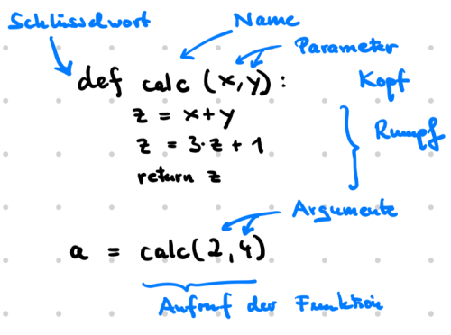

Funktionen#
In Funktionen fassen wir Codeabschnitte, die eine definierte Aufgabe erfüllen, zu einer Einheit zusammen.

def calc(x, y):
z = x + y
z = 3*z + 1
return z
a = calc(2,4)
print(a)
19
Wir müssen das Ergebnis nicht in einer Variable auffangen, sondern können es auch sofort printen.
print(calc(2,4))
19
In Jupyter-Notebooks wird die Auswertung der letzten Zeile einer Zelle auch ohne print angezeigt.
calc(2,4)
19
Eine Funktion ohne Parameter#
def sterne():
return '*****'
sterne()
'*****'
Eine Funktionen mit einem Parameter#
Beim Aufruf der Funktion wird der Parameter durch einen konkreten Wert (das Argument) ersetzt.
def sterne(k): # k ist ein Parameter
return k * '*'
sterne(100)
'****************************************************************************************************'
Wenn die Funktion einen Parameter verlangt und wir übergeben beim Aufruf kein Argument, dann bekommen wir einen Fehler
sterne()
---------------------------------------------------------------------------
TypeError Traceback (most recent call last)
Cell In[9], line 1
----> 1 sterne()
TypeError: sterne() missing 1 required positional argument: 'k'
Ein optionaler Parameter#
Ein optionaler Parameter ist ein Parameter, für den wir beim Aufruf nicht unbedingt ein Argument mitgeben müssen. Wenn wir kein Argument mitgeben, wird ein default-Wert genommen.
def sterne(k = 3): # k ist optionaler Paramenter mit default 3
return k * '*'
sterne(12)
'************'
sterne() # k erhält den default-Wert 3
'***'
Parameterliste#
Wenn eine Funktion mehrere Parameter hat, nennt man die Reihe der Parameter Parameterliste. Optionale Parameter müssen immer am Ende der Parameterliste stehen.
def zeichen(k, s='*'):
return k * s
zeichen(5,'abi')
'abiabiabiabiabi'
zeichen(20)
'********************'
Docstring#
Der docstring beschreibt die Anforderungen an die Eingabeparameter und was die Funktion zurückgibt.
def zeichen(k, s):
'''
k: positive ganze Zahl
s: String
returns: k mal den String s
'''
return k * s
zeichen(4,'abi')
'abiabiabiabi'
Der docstring kann mit help angezeigt werden.
help(zeichen)
Help on function zeichen in module __main__:
zeichen(k, s)
k: positive ganze Zahl
s: String
returns: k mal den String s
Mehrere return-Anweisungen#
In einer Funktion kann es mehrere return Anweisungen geben. Die Funktion wird beim ersten Ausführen eines return statements verlassen.
def temperatur(k):
if k >= 30: return 'heiß'
if k >= 15: return 'warm'
return 'kalt'
temperatur(45)
'heiß'
Funktionen ohne Rückgabewert#
Wird die Funktion nicht über eine return Anweisung verlassen, oder über ein return ohne Rückgabewert, dann gibt sie None zurück.
def sterne(): # Diese Funktion tut etwas, aber sie gibt nichts zurück
print('*****')
a = sterne()
print(a)
*****
None
Mehrere Rückgabewerte#
Wir können mit Komma getrennt mehrere Werte zurückgeben. Was zurückgegeben wird ist ein Tupel, das wir beim Aufruf sofort unpacken können.
def calc(a, b):
return a + b, a - b
calc(10,2)
(12, 8)
a, b = calc(10,2) # Aufruf mit unpacking
print(a, b)
12 8
Wie wir Funktionen schreiben#
Für die meisten Fälle gilt: Funktionen sollten alles, was sie für ihre Arbeit benötigen, über Parameter erhalten und alle Ergebnisse mittels return zurückgeben. Wir werden in der Regel keine input- oder print-Anweisungen innerhalb von Funktionen verwenden. (Ausnahme: Funktionen, deren alleiniger Zweck die Ein- oder Ausgabe ist).
# SO NICHT:
def ggt():
a = int(input('Bitte eine positive ganze Zahl eingeben: '))
b = int(input('Bitte noch eine positive ganze Zahl eingeben: '))
while a != b:
if a > b:
a = a - b
else:
b = b - a
print(f'Der größte gemeinsame Teiler beider Zahlen ist {a}.')
ggt()
Bitte eine positive ganze Zahl eingeben: 14
Bitte noch eine positive ganze Zahl eingeben: 24
Der größte gemeinsame Teiler beider Zahlen ist 2.
# SONDERN SO:
def ggt(a, b):
'''
a, b: positive ganze Zahl
returns: größten gemeinsamen Teiler von a und b
'''
while a != b:
if a > b:
a = a - b
else:
b = b - a
return a
a = int(input('Bitte eine positive ganze Zahl eingeben: '))
b = int(input('Bitte noch eine positive ganze Zahl eingeben: '))
c = ggt(a,b)
print(f'Der größte gemeinsame Teiler beider Zahlen ist {c}.')
Lokale und globale Variablen#
Variablen, die außerhalb der Funktionen definiert werden, heißen globale Variablen und gehören zum global frame. Beim Aufruf einer Funktion entsteht ein neuer frame für die lokalen Variablen. Dies lässt sich gut im Python Tutor verfolgen.
Funktionen können auf globale Variablen lesend zugreifen.
def doit():
y = x + 2
return y
x = 10 # globale Variable
z = doit()
print(x, z)
10 12
Lokale Variablen verdecken gleichnamige globale Variablen.
def doit():
x = 5
y = x + 2
return y
x = 10
z = doit()
print(x, z)
10 7
Ein Parameter wirkt wie eine lokale Variable
def doit(x):
y = x + 2
return y
x = 10
z = doit(5)
print(x,z)
10 7
Um eine globale Variable in einer Funktion zu verändern, müssen wir diese Variable als global deklarieren.
def doit():
global x
x = 7
return x + 2
x = 10
z = doit()
print(x,z)
7 9
In der Regel gilt: Funktionen sollten für ihre Arbeit keine globalen Variablen benötigen, sondern nur ihre Parameter.
Manchmal erlauben wir uns (aus Bequemlichkeitsgründen) auch Ausnahmen von dieser Regel.
Zusammenfassung#
Funktionen sollten alles, was sie für ihre Arbeit benötigen, über Parameter erhalten und alle Ergebnisse mittels return zurückgeben.
Beim Aufruf einer Funktion werden den Parametern die Argumente des Aufrufs zugewiesen. Optionale Parameter kommen ans Ende der Parameterliste.
Wir können innerhalb von Funktionen lokale Variablen erstellen. Diese leben nur solange, bis die Funktion zum Ende gekommen ist.
Auf globale Variablen können wir innerhalb von Funktionen lesend zugreifen, sofern sie nicht durch Parameter oder lokale Variablen verdeckt sind.
Wenn wir innerhalb von Funktionen eine globale Variable ändern wollen, müssen wir sie in der Funktion mit dem Schlüsselwort global als global deklarieren.
Wenn wir beim Durchlaufen einer Funktion auf ein return stoßen, wird die Funktion sofort verlassen.
Mit return können wir mehrere Werte zurückgeben.
Wir erstellen Funktionen weil
wir einzelne Codeabschnitte besser testen können.
mit sprechenden Funktionsnamen die Programme, in denen wir die Funktionen aufrufen, besser lesbar werden.
wir die Codeabschnitte an anderen Stellen wiederverwenden können.
Aufgaben#
Bei den meisten Aufgaben sind nur der doc-String und Beispielaufrufe gegeben. Die Kopfzeile und der Rumpf der Funktion sollen ergänzt werden.
'''
Aufgabe 1:
'''
#your code
'''
returns: None, Gibt die Zeichenfolge 'x.' aus
>>> func1()
x.
'''
#your code
'''
Aufgabe 2:
'''
#your code
'''
returns: string, die Zeichenfolge 'x.'
>>> s = func2()
>>> print(s)
x.
'''
#your code
'''
Aufgabe 3:
'''
#your code
'''
k: int, k > 0
returns: string, k-mal die Zeichenfolge '.x'
>>> s = func3(5)
>>> print(s)
x.x.x.x.x.
'''
#your code
func3(5)
'''
Aufgabe 4:
'''
#your code
'''
k: int, k > 0
c: str, ein Zeichen
returns: string k-mal die Zeichenfolge: Punkt, gefolgt vom Zeichen c
>>> func4(3,'#')
.#.#.#
'''
#your code
'''
Aufgabe 5:
Hinweis: der default-Wert ist der Wert, der angenommen wird, wenn für den Parameter kein Wert übergeben wird.
'''
#your code
'''
k: int, k > 0
c: string, ein Zeichen mit default 'x'
returns: string k-mal die Zeichenfolge: Punkt, gefolgt vom Zeichen c
>>> func5(3,'#')
.#.#.#
>>> func5(4)
'.x.x.x.x'
'''
#your code
'''
Aufgabe 6: Nutze mehrere return-Anweisungen
'''
# your code
'''
x: int
returns 'A' falls x < 20
'B' falls 20 <= x < 30
'C' falls 30 <= x
>>> func6(15)
A
>>> func6(25)
B
>>> func6(35)
C
'''
#your code
'''
Aufgabe 7:
'''
#your code
'''
a, b: ints
returns: Tupel aus a-b und a+b
>>> x1, x2 = func7(10,1)
print(x1, x2)
9 11
'''
#your code
'''
Aufgabe 8:
Erläutere am Beispiel die folgenden Begriffe:
globale Variable, lokale Variable, Parameter, Argument
Welchen Wert hat z am Ende des Programms?
'''
k = 10
def doit(y):
r = 5
w = k + y + r
return w
z = doit(3) + k
#print(z)
'''
Aufgabe 9:
Welchen Wert hat z am Ende des Programms?
'''
x = 10
def doit(k):
global x
x = 5
z = 7
w = k + z
return w
z = doit(3) + x
#print(z)